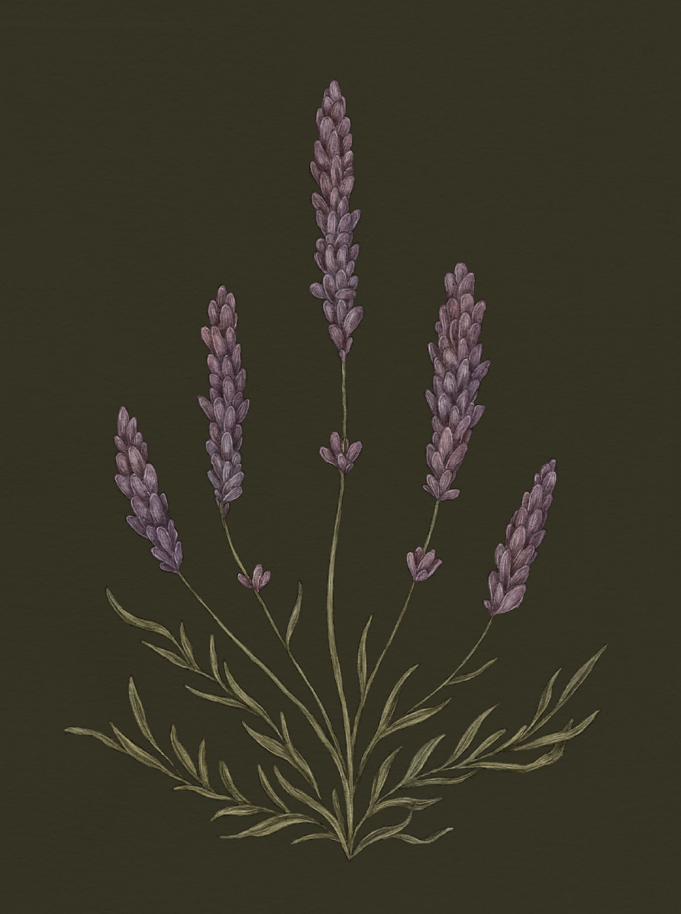

The Language of Flowers
Lavender

Lavender
Lavandula
Meaning
Distrust
Origin
Historically, lavender grew in hot climates, where asps, venomous snakes, frequently made their homes.
Thus, the beautiful and fragrant flower could lure a curious person to their death. Some say the asp
that killed Cleopatra was hidden in a bundle of lavender.
Pair With
- Foxglove to encourage a friend to reconsider their choices
- Datura to tell someone that you see through their facade